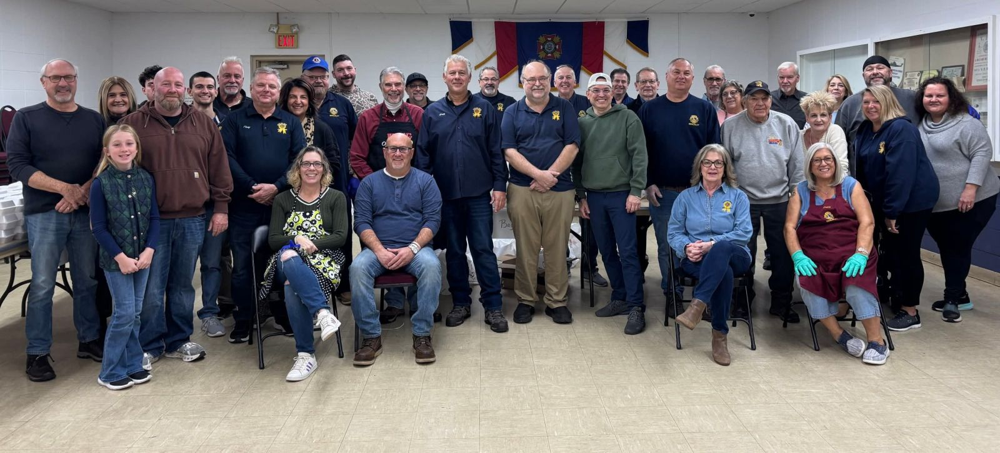
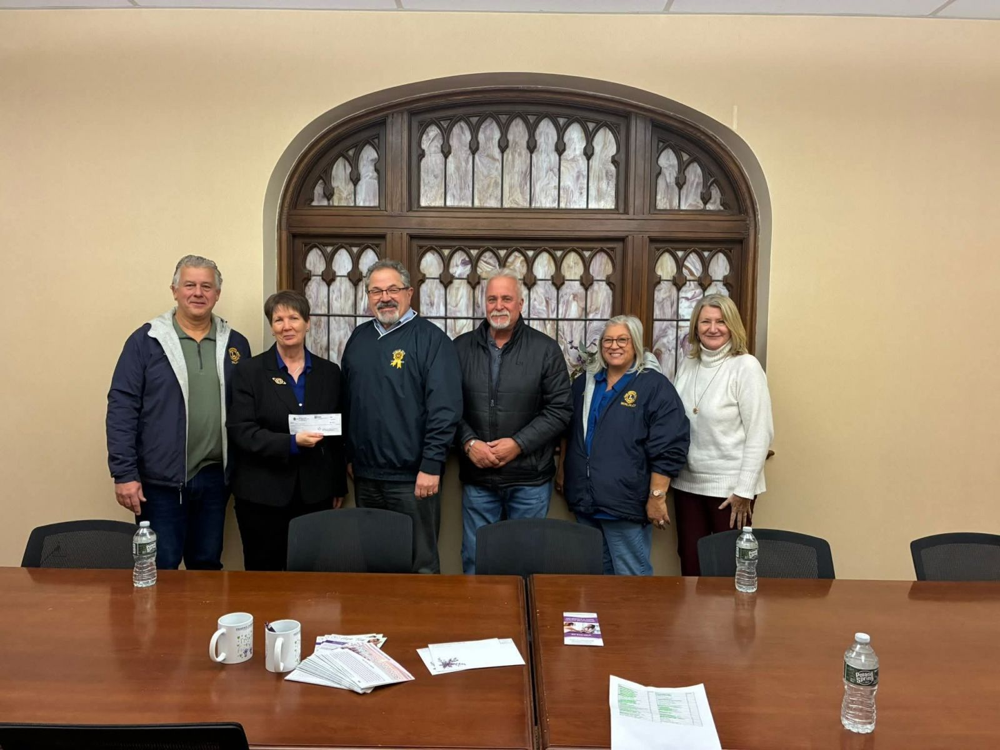
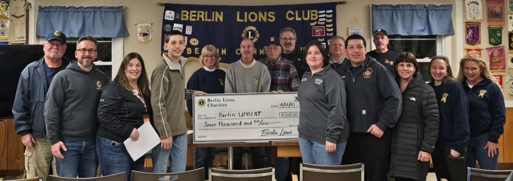
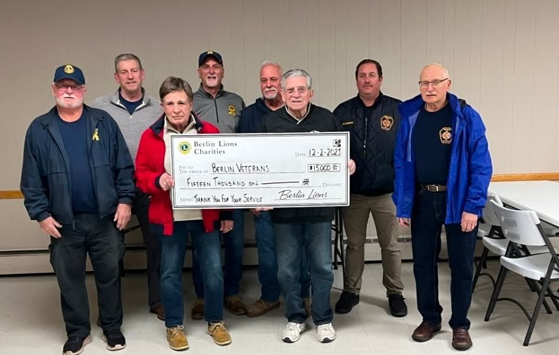
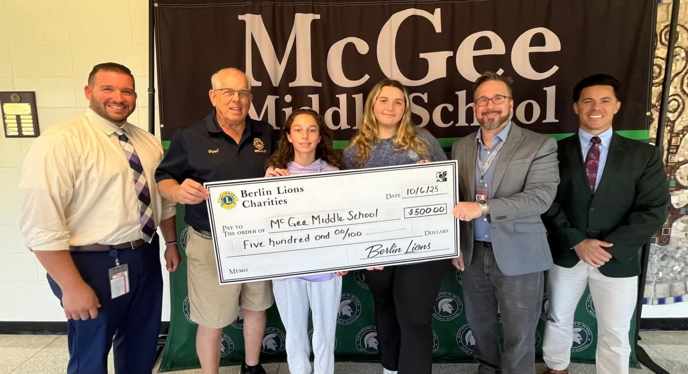
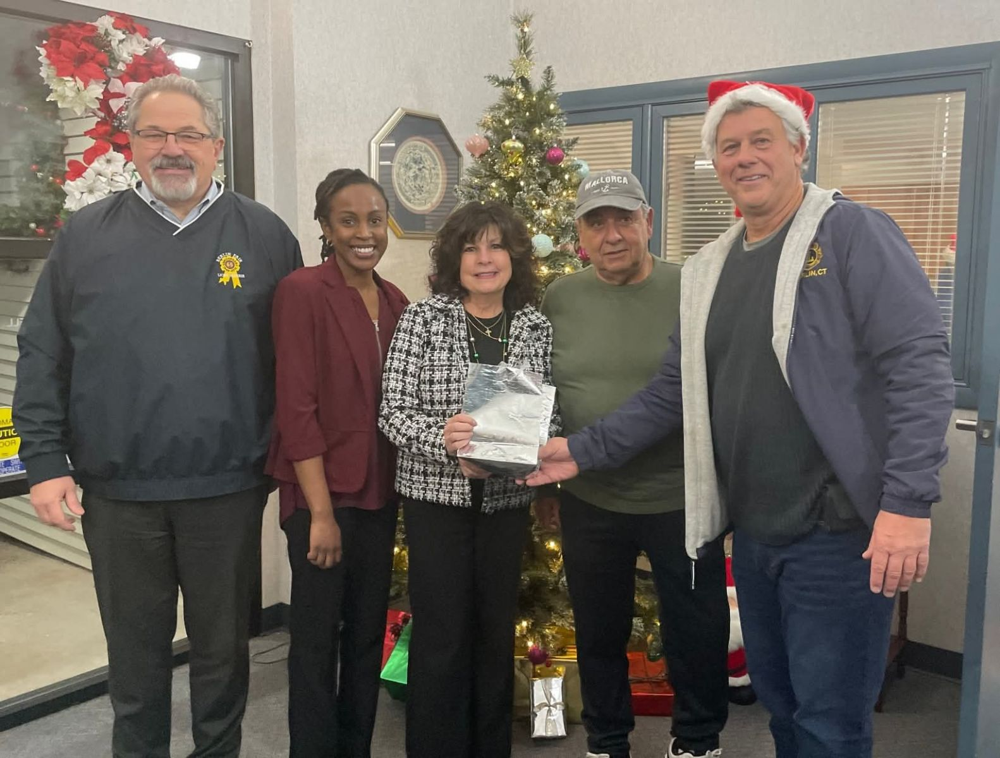
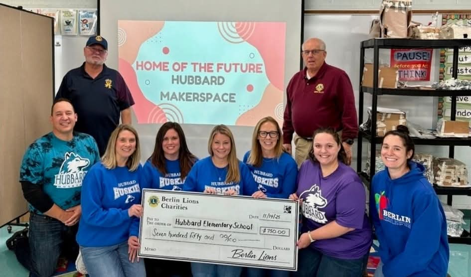
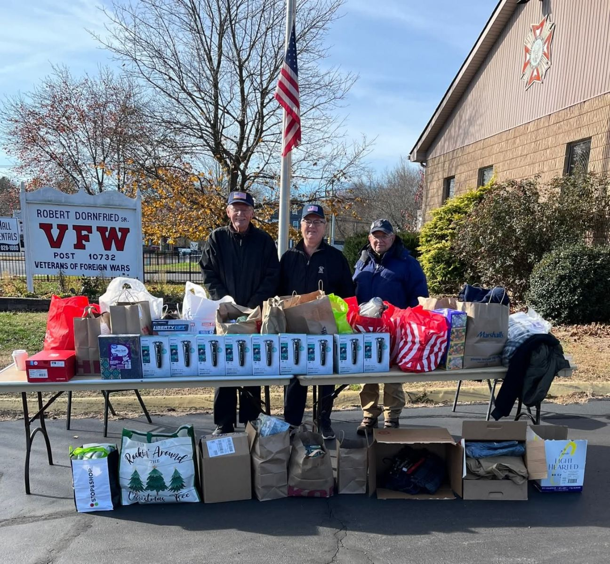
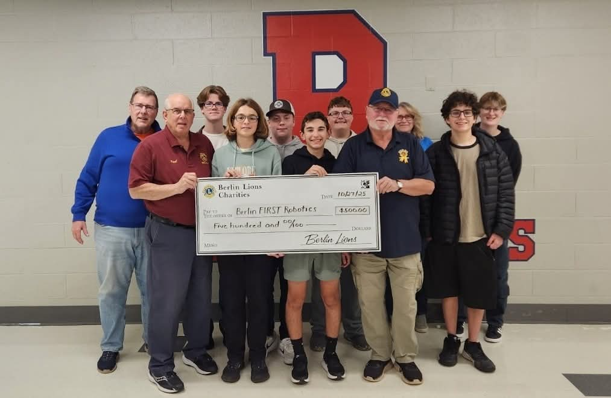
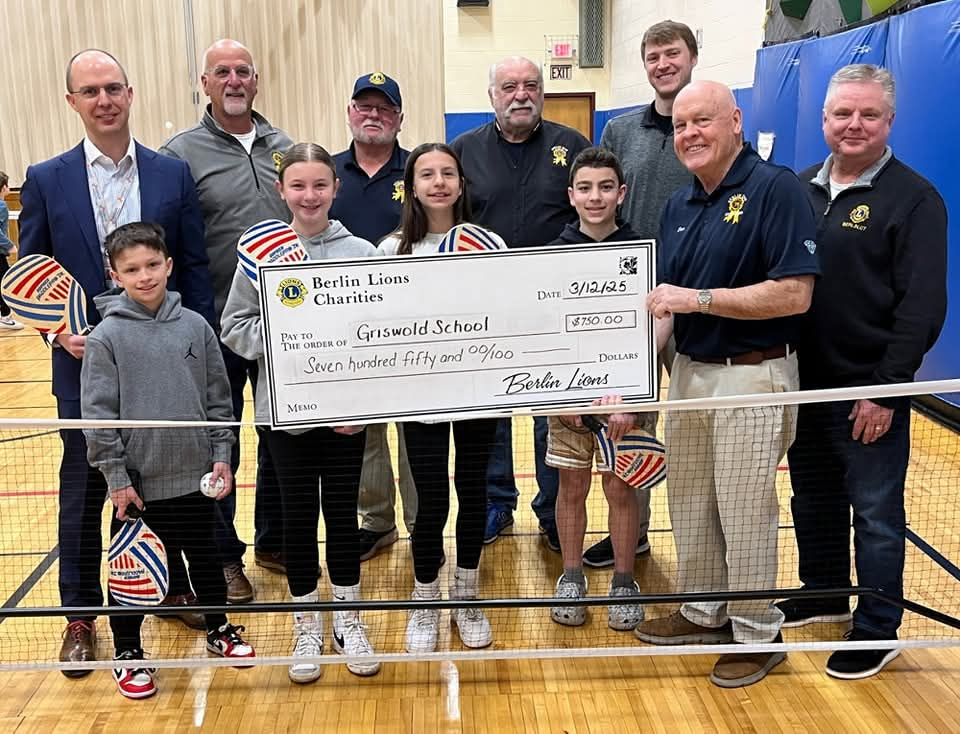

Berlin Lions Club
The Berlin Lions Charities is a 501c3 allowing the Berlin Lions to raise money to give back to our community through various fundraising events such as the Berlin Fair, and the Berlin Lions Wine and Beer Tasting

The Visually Impaired Persons (VIP), is an annual event sponsored by the Berlin Lions Club, allowing individuals to compete for free.

The Wine and Beer Tasting is a annual fundraiser and community event featuring live music and a large selection of wine and local beers for your sampling pleasure!
Donations & Fundraising allows the Berlin Lions Club Charities to support a long list of local community organizations & host community events including but not limited to:
Through your generous support, the Berlin Lions Club has been able to give back to the organisations that make our community great.

The Berlin Lions provided Thanksgiving dinners to families in need throughout the Berlin community.

Supporting the Prudence Crandall Center, which provides vital services to survivors of domestic violence in Connecticut.

Donation to Berlin Upbeat, supporting students with disabilities at Berlin High School through inclusive programming.

Continued support for Berlin's Veterans Commission, helping to provide resources and recognition to our local veterans.

A donation to McGee Middle School supporting students and educational programmes in the Berlin school district.

Gift card donations to residents of the Berlin Housing Authority, providing direct support to those in need.

Funding a makerspace at Hubbard Elementary School to inspire creativity and hands-on learning for young students.

A joint effort with Berlin Upbeat and the Knights of Columbus to collect goods and clothing for local veterans.

Supporting Berlin's FIRST Robotics team, helping students develop skills in science, technology, engineering and maths.

A donation to Griswold School in support of students and staff across the Berlin school community.
Berlin Lion's Club
430 Beckley Road
P.O. Box 23
Berlin CT, 06037
secretary@berlinlions.org
860-828-0063